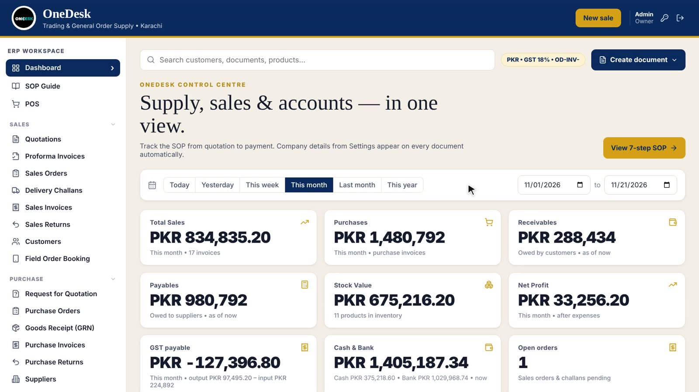
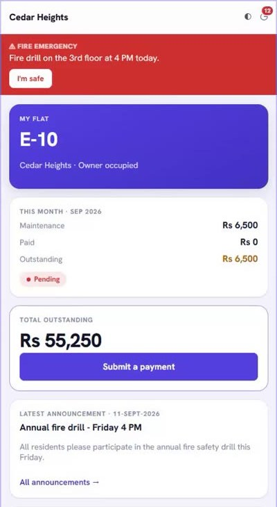

ERP & accounting
Sales, purchasing, inventory and accounts working from the same data, so a sale updates stock and the ledger without anyone entering it twice.
See OneDesk ERPI design and build ERP, point-of-sale, logistics, property and production systems — software where one entry flows through the whole business, built around how your team actually works.


Selected work
Each project started with how the work actually moved — who records what, where it gets copied, where it goes wrong — and ended as software that enforces the right process.
Services
Each system is scoped to what you actually need — from a single module to a complete platform — and delivered with the same engineering standards.
Sales, purchasing, inventory and accounts working from the same data, so a sale updates stock and the ledger without anyone entering it twice.
See OneDesk ERPFast order entry, product variations, payments and daily sales for busy counters — with stock deducted through recipes.
See Happy Pizza POSJobs, trip programs, POD / EIR, billing and accounts in one chain, so every bill traces back to its delivery.
See SMS LogisticsFlats, owners, tenants, monthly charges, payments, complaints and expenses, with a view built for every role.
See Building ManagementJob cards routed through departments, each working from its own queue, so you always know where a job is.
See PrintPlusFast, search-ready websites that explain what a business does in plain language and lead visitors to get in touch.
See ByteAxisTechProcess
Five steps, illustrated with one real example: the logistics ERP, where wrong bills turned out to be a data-design problem.
Learn how work really moves: who creates a record, who changes it, and where information is passed along by hand.
The container number was typed again at three different desks.
Trace the visible issue back to the point where the error is created, not where it is noticed.
No record connected a delivery to the bill raised for it.
Turn requirements into a data structure and a small set of clear rules the software enforces.
A bill can only be created from a verified delivery document.
Database, business logic and screens — with the rules living in code, where they can't be skipped on a busy day.
Billing reads the verified POD and refuses duplicates.
Test with the client's own records and measure before calling anything fixed.
At Happy Pizza, 5,123 real sales exposed a 31-second screen; it now loads in about 2.
Engineering standards
Each principle is visible in a project you can open and review.
Every record is created from the one before it — a quotation becomes the invoice, a delivery note becomes the bill.
See SMS Logistics, OneDesk ERP
If a bill must come from a verified delivery, the software refuses anything else, so nobody has to remember.
See SMS Logistics
Cashiers get a till, accountants get the books, residents get their own flat — enforced on every page.
Slow screens are timed before and after a fix. Numbers in these case studies are measured, not estimated.
See Happy Pizza
Totals and balances are calculated on the server when a record is saved, never trusted from the screen.
See PrintPlus
No invented statistics or testimonials. Unverified sections stay hidden until real data exists.
See ByteAxisTech
About
I'm Adnan Hakimuddin, a software developer based in Karachi, Pakistan. Since 2018 I've worked on the software businesses run on — ERP modules for ledgers, payables and receivables, secure APIs, and the web applications in front of them — as a developer, a senior engineer and a tech lead.
Today I build complete systems directly for businesses. I start by sitting with the people who do the work, map how each record really moves, and design the software around that — then test it against their real data before it goes live.
Experience
Product demos
Screen recordings of the actual products — each one follows real records from start to finish.
Contact
Tell me what your business does, what is slowing your team down, and what you use today — paper, spreadsheets or existing software. I'll reply with how I would approach it.